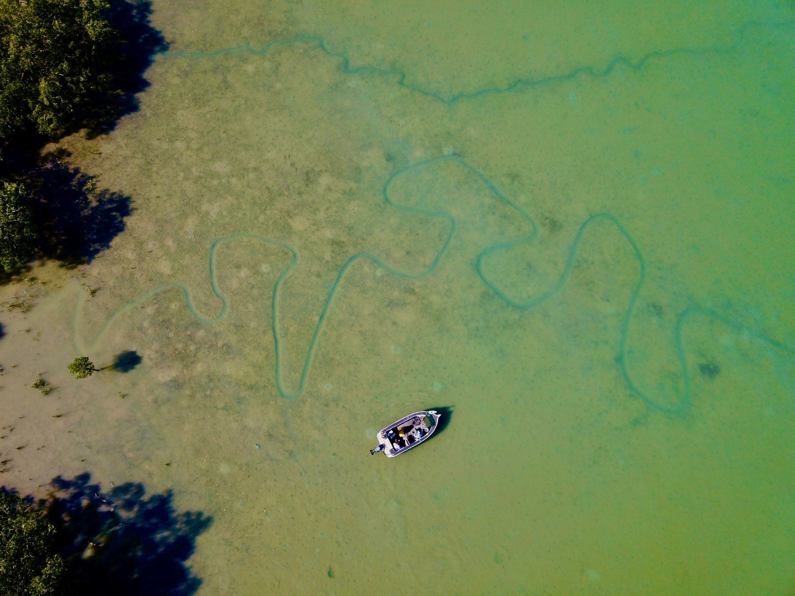

Places
From 9 segments across the archive.
The Daly, and the April run that draws everyone. Every quote below is from a real segment — follow it through for the audio and the full transcript.
Um, but yeah, I mean, the, the big problems that, uh, gonna come once the water does go away is that the massive cleanup in places like Daly River where every single caravan park is all underwater at the moment.
Bag a Barra — 20 March 2026 Bag a Barra, Oz Off Road Radio
Last time the river flooded a couple of years ago, they had to bring in some, some special, special task forced coppers to, uh, keep an eye on the crocs, because they swim around on the airport at the, um, at, uh, at Nayu at the local community at Daly River there.
Bag a Barra — 19 January 2024 Bag a Barra, Oz Off Road Radio
I was talking to some fellows the other day, they were talking about the Daly River, I don't know if I'm sure they went up with you or not, but they said that they'd been up there and mate, they had a lot of success.
Bag a Barra — 19 May 2023 Bag a Barra, Oz Off Road Radio
Now, you've set up base camp down there in the Daly River. See, she fishing? What's happening? Yeah, that's right.
Bag a Barra — 18 February 2022 Bag a Barra, Oz Off Road Radio
Now you're going down this week, but next week looks like it's a go down the Daly River with your caravan to set up a base down there for the next few months for your fishing tours down in that part of the world.
Bag a Barra — 11 February 2022 Bag a Barra, Oz Off Road Radio
There's that change where you'll go now or you've been down the Daly River? Where to from here? You just keep fishing where they're biting or we start heading back into some other places? Yeah, that's right.
Bag a Barra — 30 April 2021 Bag a Barra, Oz Off Road Radio
But this year, we've had such good rains, particularly in the catchments of, you know, Catherine and Daly River where I fish through this time of year.
Bag a Barra — 5 March 2021 Bag a Barra, Oz Off Road Radio
We stop in there most days on the way back from the Daly River when we're doing our extended charters down there through runoff or stop there for a counter on the way back on the last day before we get the boys back to town.
Bag a Barra — 7 August 2020 Bag a Barra, Oz Off Road Radio
And I'm tipping you with the 1st person into the Daly's River, Daly River pub as well. I mean that's just the way it is.
Bag a Barra — 17 January 2020 Bag a Barra, Oz Off Road Radio